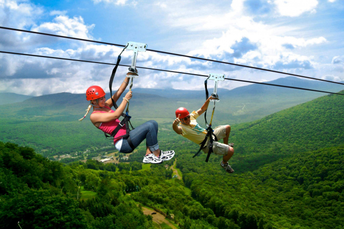

1.Xem liveshow nhạc giữa rừng
Nghe nhạc sống và thưởng thức ly cà phê nóng giữa thiên nhiên núi rừng là trải nghiệm đang thu hút nhiều du khách đến Đà Lạt.
Thời gian biểu diễn từ 16h30-20h30 cũng là thời điểm để bạn thu trọn cảnh hoàng hôn trên phố núi. Lululota Coffee, Mây Lang Thang, Thông Ơi,... là những địa điểm bạn có thể lựa chọn để thưởng thức các buổi liveshow giữa rừng núi bạt ngàn.
2. Trượt zipline băng rừng
Trượt zipline băng rừng ngắm view đồi núi là trải nghiệm được nhiều du khách yêu thích độ cao lựa chọn. Tại đây, bạn sẽ được lựa chọn từ 80 loại trò chơi trên cao với 6 độ khó khác nhau. Trước khi tham gia thử thách, du khách sẽ được hướng dẫn các kỹ thuật an toàn
Khi cảm thấy tự tin, bạn sẽ được chinh phục đường dây dài ngoằn đi qua rừng. Cảm giác không còn gì “đã” hơn việc được khám phá Đà Lạt bằng một lối đi riêng - băng qua núi rừng, nhìn xuống bên dưới là thác và cây.
3. Chèo SUP đón bình minh trên hồ Tuyền Lâm
Đây là cách "săn mây" khác tại thành phố sương mù. Trải nghiệm này sẽ giúp bạn thư giãn giữa làn sương khói mờ ảo và lắng nghe tiếng chim hót buổi sớm.

Để tham gia, bạn sẽ được nhân viên của tour đón ở bến thuyền Tuyền Lâm từ 5h và hướng dẫn các kỹ thuật điều khiển SUP.
4. Cắm trại đầy đủ tiện nghi trong rừng
Các mô hình cắm trại trong rừng với những căn lều đầy đủ tiện nghi là gợi ý khác để bạn có thêm trải nghiệm mới ở Đà Lạt. Thay vì phải vất vả dựng lều, chuẩn bị đồ ăn và các vật dụng khác... một số địa điểm cung cấp dịch vụ cắm trại như CampArt by #MợJen, Dalat Camp, Twin Beans Farm... sẽ giúp bạn thực hiện điều đó.

Cắm trại trong rừng được nhiều người yêu thích, lựa chọn khi khám phá Đà Lạt năm 2021. Nếu chán ngán các điểm "nghìn người check-in", bạn có thể hòa mình vào thiên nhiên, tìm một nơi yên tĩnh tụ họp cùng người thân, bạn bè.
5. Vượt 7 tầng thác Datanla
Một trong những thử thách thú vị nhất tại Đà Lạt năm 2021 là leo dây vượt thác Datanla. Bạn sẽ leo xuống vách đá cao thẳng đứng, dòng nước chảy xiết chỉ với một sợi dây, một trải nghiệm mới lạ, được nhiều bạn trẻ yêu thích.

Trò chơi này tốt nhất dành cho những ai có chuẩn bị về mặt thể chất, nhưng bạn cũng không cần là người quá chuyên nghiệp để thực hiện vượt thác. Khi tham gia trò chơi, bạn sẽ được huấn luyện bài bản những kỹ năng quan trọng như điều khiển dây, giữ thăng bằng, vượt nước và cách giải quyết tình huống.

Hành trình vượt 7 tầng thác Datanla là trải nghiệm thú vị. Với sự hỗ trợ của các hướng dẫn viên cùng thiết bị bảo hộ, du khách sẽ được trải nghiệm leo vách đá khô 18 m, zipline vượt thác, trượt máng tự nhiên 3 m, vượt thác 25 m, nhảy thác tự do 7 m hoặc 11 m, leo thác máy giặt 14 m.